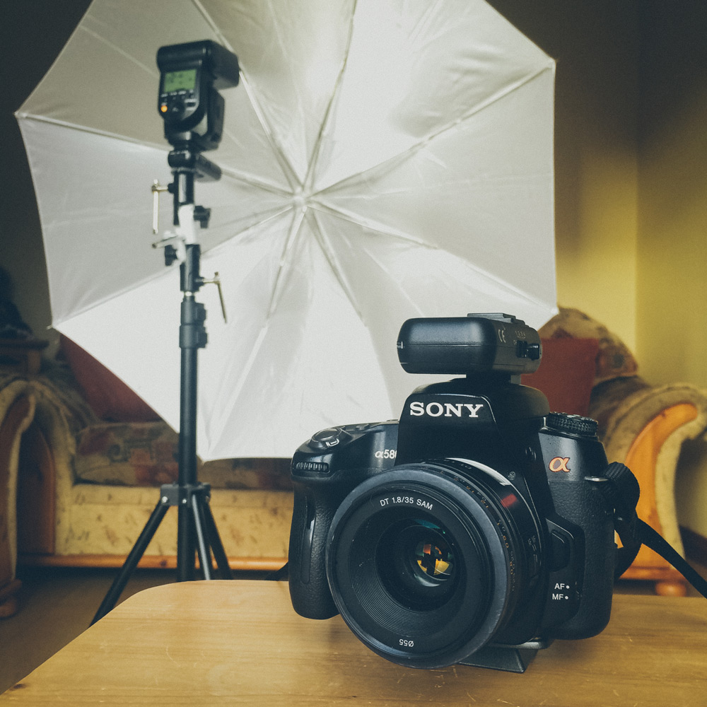
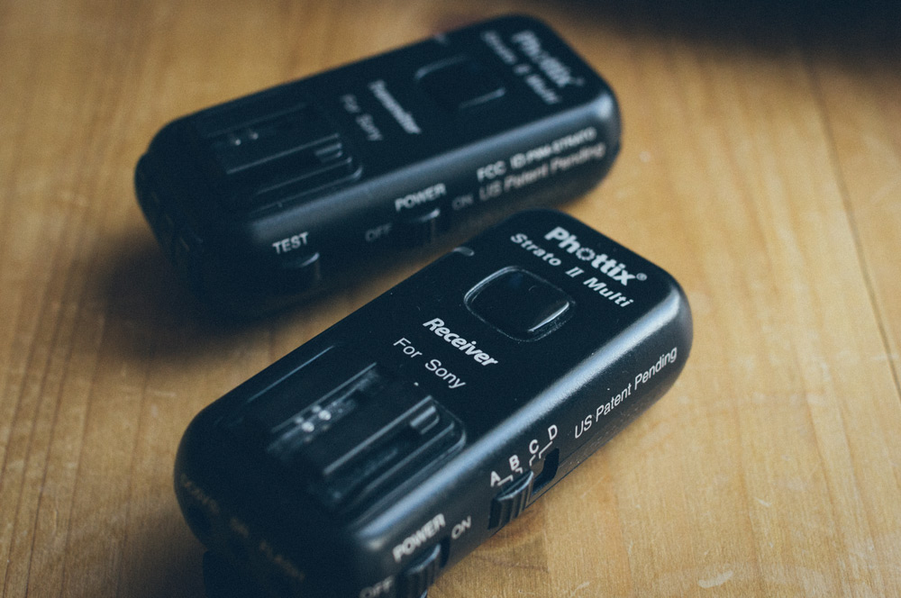
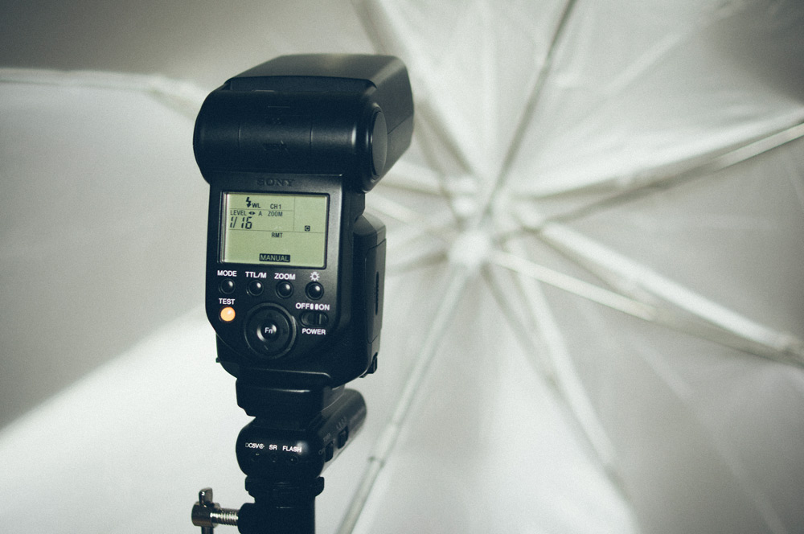
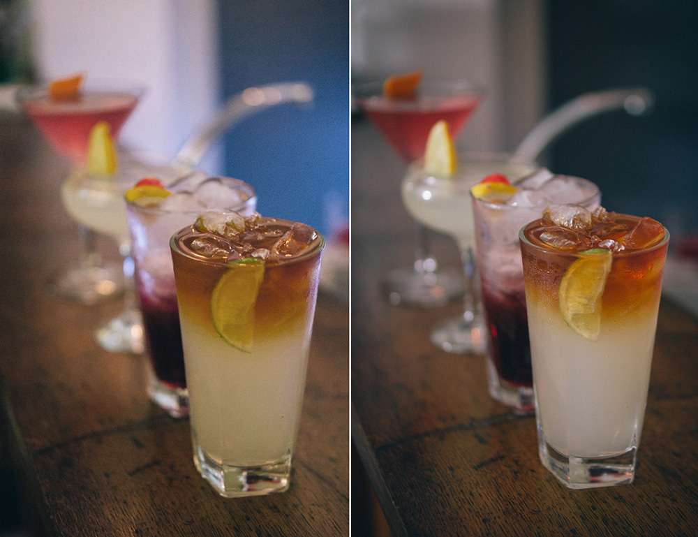

Strobist Photography for Sony Alpha shooters
Posted on May 3, 2015
Posted on May 3, 2015
When I’m out taking photos, I generally shoot the scene using the natural light outdoors, or the available light indoors, whether that’s stage lighting at a gig, or artificial light inside a room. However there have been times when I’ve been shooting indoors in low-light and I’ve been forced to hike up my camera’s ISO setting, resulting in noisier (grainy) images. In those situations, I would have benefitted from having an off-camera flash.
I became more and more interested in strobist photography (i.e. using off-camera flashes, a.k.a. speedlights, to light a scene) so when asked for Christmas gift ideas last year, I decided to put some lighting equipment on my list. It was a frustrating experience searching for answers regarding off-camera flash setups for Sony Alpha users, as there seems to be a lack of information available about this. Hopefully this post will be helpful in guiding other off-camera, wireless flash photography newbies, and in particular, fellow Sony Alpha shooters.
 I’ll be detailing my strobist setup for Sony Alpha
There are a few core pieces of equipment you’ll need to get started, along with your DSLR and lens. For reference, I use a Sony A580.
Note that my setup is for one flash only, if you want to use two speedlights, you’ll need another receiver for the flashgun, along with an extra stand, umbrella mount and umbrella. Another point to note is that most light stand holders use a cold-shoe mount to attach receivers and flashguns to the holder. However, Sony Alpha hotshoes are not the standard shape that most brands use, so instead you’ll need to order a holder with a screw top mount instead.
 My Phottix Strato II Wireless Trigger Set
After reading various online reviews and comments from Sony users on photography forums, I chose to add the Phottix Strato II trigger set to my equipment list as it seemed to be best quality, cost-effective option. While you could buy cheaper YungNuo triggers/receivers, there’s limited compatibility with Sony products and there’s a likelihood that they won’t work with older or future Sony flashes.
Start by mounting the transmitter to your DSLR’s hotshoe. You’ll need to alter some settings on your camera so it knows that you’ll be using an off-camera flash. I can access these settings via the function menu (Fn button on the back) on my camera, going to the flash mode settings and changing the mode to wireless (WL). Don’t forget to change your white balance setting to “flash” while before you start taking photos.
Next you’ll need to take your light stand out of the bag, pull out the legs and set it up. Grab your umbrella holder and screw it on to the top of your light stand. To attach the Phottix receiver to the umbrella holder, simply screw it on. Attach the flash to the receiver by slipping it into the hotshoe. Open the umbrella and pop the shaft into the hole in the flash holder, tightening it using the screw on the holder.
 My flashgun with transmitter attached, mounted on my light stand
Now that everything is in place, you’ll just need to turn on your flash, transmitter and receiver and fiddle about with a few more settings. Press on a channel button on your transmitter, when you see it light up, that’s it set. Turn on the same channel on your receiver. The Phottix Strato II trigger set doesn’t support wireless TTL (though you can use TTL when the flash is mounted on your transmitter on the camera.), so you’ll need to set the flash power manually. Of course, this depends on your scene and the results you’re after. Have a play about with the flashgun settings until your exposure is just right.
Take a few photos and make sure the flash is firing. If you find the flash isn’t firing, check that both the transmitter and receiver are switched on and are using the same channel (the selected one will be lit up). Also check that the camera’s flash mode is set to “wireless.”
I recently did a freelance photography job for The Vault, a new restaurant in Banbridge, where I had chance to use my new lighting gear in a real-world situation. I had a mix of lighting available to work with at the pizzeria- from the dim, atmospheric lighting in the dining area to the wood-fired oven where the pizza was illuminated solely the flames.
I lit this scene with a single flashgun, shot through an umbrella.
The shoot involved plenty of experimentation to find the best way to light the scene, including the flash power settings and the position and distance of the stand from the scene. Sometimes the light from my flash was the primary light source for a shot, and other times it was used to add a little extra light to brighten up the scene a bit.
I lit this scene with a single speedlight, shot through an umbrella.
The benefit of having a strobist setup is clear when comparing the shots below, taken one after another. The left photo shows the drinks lit with only the lights at the bar, the right photo shows the same scene lit by the flash. The left one is noticeably nosier as I had no choice but to bump up the ISO to compensate for a lack of available light. The right one is a much sharper shot with a lot less noise as I could reduce the ISO to 200.
 A comparison of the same scene with (right) and without (left) flash.
While I’d still consider myself a newbie when it comes to strobist photography, I learned a lot during the two photoshoots at the restaurant and being able to experiment with different settings. I found the one-flashgun setup to suit my needs perfectly in this case, but I may invest in another flash (and stand, umbrella bracket and light diffuser) in the future, especially since I hope to learn more about using speedlights for portraiture photography.
It’s definitely useful to have off-camera flash as you can’t always depend on available light to be enough. The great thing about strobist photography is that it’s cheaper than buying studio lighting and it’s also very portable.
Hopefully this post has helped clarify what you’ll need and how to get started. Post a comment if you have any questions! Oh and if you’re interested in seeing a few more photos from the shoot, take a look on my Flickr.
Share on Twitter